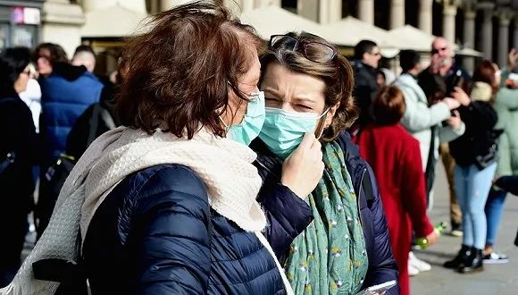

全球股市战战兢兢，世卫否定大流行病
原文链接 备份链接 世界卫生组织官员对韩国和伊朗等地爆发新冠病毒疫情表示担忧，但表示情况尚未上升到大流行病的程度。在美欧金融市场，这一模式已变得清晰：新增确诊病例数=增加的市场恐慌=疲弱的资本市场。这一模式会否必然在中国出现，尚待观察 …

意大利米兰街头。图片来源：半岛电视台
“
全球新冠肺炎疫情播报，持续更新。
”
（本文持续更新中，点击左下角阅读原文，实时跟踪国际疫情动态。文中段首所示时间为本文更新时间。）
0800 【意大利新冠肺炎死亡病例增至七例，累计确诊229例】
据意大利安莎通讯社消息，该国北部新增一例新冠肺炎死亡病例。死者是一名80岁男性，上周因心脏病被送往洛迪市一所医院。当地医生认为该患者是被另一名患者感染。
另有一名意大利患者治愈出院，目前意大利确诊人数达229例，是欧洲疫情最严重的国家。确诊病例中有172例集中在伦巴第大区。而传染源——“零号病人”尚未被发现。
0800【西班牙确诊第三例新冠肺炎确诊病例】
据央视新闻消息，当地时间24日晚，西班牙确诊第三例新冠肺炎确诊病例。该名患者是在加纳利群岛特内里费岛南部度假的一名意大利医生，之前他因身体不适而去了当地一家私人诊所，之后他的冠状病毒检测呈阳性。
此前西班牙曾有两例新冠肺炎确诊病例，均已治愈出院。
0800【法国11名确诊患者全部出院】
据中新社消息，法国卫生部长维兰当地时间24日晚宣布，法国11名新冠肺炎确诊患者已经全部出院。这意味着法国除了一名患者去世外，其他已知确诊患者均被治愈。维兰说，最后一名仍在住院的患者当天治愈，不再具有传染性，可以出院。
截至目前，法国12名新冠肺炎确诊患者中，一名来自中国湖北的80岁患者医治无效去世，其余11名确诊患者最近几天陆续出院。维兰说，法国目前没有新的确诊病例，也没有病毒流行传播的迹象。
0800【斯洛伐克总理辟谣：未得新冠肺炎】
近日，针对多家媒体关于斯洛伐克总理佩列格里尼疑似感染新冠肺炎的报道，2月24日晚上，佩列格里尼在其社交媒体账号上表示，“有人在推特上炮制我感染新冠肺炎的恶作剧。真是一派胡言！”
2月22日晚间，佩列格里尼因高烧和急性上呼吸道感染被送往医院接受治疗，并暂时取消了此后的行程安排，总理办公室于23日发表声明确认了这一情况。由于近日新冠肺炎在一些欧洲国家的扩散，这一声明立即引发了外界的猜测。截至发稿，斯洛伐克全国并无新冠肺炎确诊病例。
0800 【伊朗库姆地区21名新冠肺炎感染者康复出院】
据央视新闻援引伊朗媒体报道，伊朗卫生部库姆地区代表宣布，截至24日库姆已经有21名新冠肺炎感染者康复出院。目前库姆两家指定医院中，共有320名疑似感染病例。
中新网援引外媒报道说，伊朗卫生部副部长哈利其24日表示，该国新冠肺炎累计确诊病例达61例，死亡人数增至12人。大多数确诊病例出现在位于首都德黑兰以南120公里的圣城库姆。
0800 【阿曼首次确诊两例新冠肺炎病例，暂停往来伊朗航班】
阿曼卫生部23日通报称，该国首次确诊两例新冠肺炎病例，是两名从伊朗返回阿曼的女性。目前两名患者状况稳定，正居家隔离。
另据阿曼国家电视台报道，该国民航总局最后宣布暂停所有往来伊朗的航班，恢复时间待定。
0800【科威特确认新增两例新型冠状病毒感染者】
据央视新闻消息，科威特卫生部24日晚发布声明称，经过对伊朗返回科威特公民的医学检查，确定新增两例新型冠状病毒感染者。科威特境内的新型冠状病毒感染者数量也因此增加至五人，其中包括一名沙特公民和一名不确定国籍者。
科威特卫生部门表示，已对确诊患者实施救治，并将采取更严格的措施防止疫情在科威特境内蔓延。
0800【巴林确诊第二例新冠肺炎病例】
据央视新闻消息，巴林卫生部当地时间24日晚发布公告，称确诊一名巴林女性公民为新型冠状病毒确诊病例。这也是巴林境内确诊的第二名新冠肺炎确诊病例。
公告显示，该感感染者此前曾前往伊朗旅行，后与其丈夫和儿媳一起经停阿联酋迪拜后返回巴林。巴林卫生部表示，正在继续采取严密措施，以防止病毒在巴林境内传播。另据当地媒体报道，目前尚有上千名巴林公民在伊朗境内。
0800【美国确诊病例增至53例，白宫拟要求国会拨款应对】
据新加坡《联合早报》消息，美国疾病控制与预防中心（CDC）24日宣布，美国境内的新冠肺炎确诊病例为14起，加上钻石公主号游轮撤回人员中确诊的39起病例，全国累计病例已增至53起。其中新增的18例病例全部为日本“钻石公主”号游轮上的撤侨人员。
路透社报道，CDC表示，在加利福尼亚州洪堡县和萨克拉曼多县出现两起新病例。美国公共卫生部官员警告，从暴发疫情地区撤回的公民出现确诊病例数量预计将会增加。白宫发言人受访时表示，特朗普政府正考虑向国会要求紧急拨款，以应对传播迅速的冠病病毒。据《华盛顿邮报》报道，白宫可能要求国会拨款10亿美元。
0800【美股重挫，道指下跌1000点创两年来最大单日跌幅】
周一，因中国以外地区新冠肺炎病例数量激增，引发人们对病毒蔓延将导致全球经济持续放缓的担忧，美国股市大幅下跌。道琼斯指数收盘下跌1031.61点，至27960.80点，跌幅3.56%。标普500指数下跌3.35%，收于3225.89点。纳斯达克指数下跌3.71%，收于9221.28点。
0800【美国调高意大利和伊朗旅游警告至第一级】
据新加坡《联合早报》消息，由于伊朗与意大利新冠肺炎疫情迅速蔓延，美国疾病管制中心将两国旅游警示调升至第一级，未建议取消或延迟前往当地，但呼吁有意前往的民众应做好预防措施，避免与病患接触并勤洗手。
0800 【加拿大新冠肺炎确诊病例累计达到11例】
据央视新闻消息，加拿大不列颠哥伦比亚省医疗官波尼·亨利（Bonnie Henry）当地时间24日上午在温哥华宣布，该省又发现一例新冠肺炎确诊病例。
这名40多岁的男子与该省的第六个确诊病例有过接触，目前病情稳定，正在家里接受隔离治疗。这个病例的出现使得该省新冠肺炎确诊病例达到七例。此前一天，安大略省也宣布新增一例确诊病例。截止目前，加拿大境内发现的新冠肺炎确诊病例累积已达11人，其中四人已经痊愈。
0800【韩国累计确诊病例833例，死亡8例】
韩国中央防疫对策本部24日通报，截至当天下午4点，韩国累计确诊新冠肺炎病例833例，死亡8例。确诊病例中有74.6%与“新天地教会和清道大南医院”有关。
韩国共有3.2万多人接受新冠病毒检测，其中2.0292万人检测结果呈阴性，其余1.1631万人结果尚未出炉。
0800【韩政府：将对新天地教会所有信徒进行病毒检测】
据韩联社报道，韩国中央灾难安全对策本部25日表示，经过与新天地教会的协商，政府将对新天地所有信徒进行新冠病毒检测，并随时公开检测结果。
对策本部表示，前一天国务总理秘书室等与新天地教会进行密切磋商，就新天地方面提供全体信徒名单和联系方式，以及积极配合卫生部门检测工作等达成一致。
0800【日本新增10例新冠肺炎确诊病例，累计确诊850人】
据日本共同社消息，日本24日新确诊10人感染新冠肺炎，分布在北海道、东京都、神奈川县和石川县。此外，在“钻石公主”号游轮工作的厚生劳动省的1名职员和1名检疫官当天也确诊感染。包括游轮的乘客和船员在内，日本国内感染者增至合计850人。
0800【世卫组织：新冠肺炎有发展成全球性流行病的可能，但目前还不是】
世界卫生组织（WHO）总干事谭德塞24日表示，新冠肺炎疫情有发展成全球性流行病的可能性，但目前还没有到那一步。
谭德塞表示，使用“全球性流行病”一词，需要对病毒的扩散范围、严重性和社会影响进行评估，目前他们还没有看到新冠病毒在全球范围内失控的现象。
谭德塞指出，目前新冠肺炎疫情对全球各国的影响不尽相同，不能一刀切，要“因国制宜”。

原文链接 备份链接 世界卫生组织官员对韩国和伊朗等地爆发新冠病毒疫情表示担忧，但表示情况尚未上升到大流行病的程度。在美欧金融市场，这一模式已变得清晰：新增确诊病例数=增加的市场恐慌=疲弱的资本市场。这一模式会否必然在中国出现，尚待观察 …
原文链接 备份链接 据路透社报道，2月22日，伊朗卫生部发言人贾汉普尔表示，伊朗新检测出10例新冠肺炎病例，其中1例已经死亡，伊朗确诊病例总数达到28例。 “伊朗所有城市可能都出现冠状病毒” 贾汉普尔表示，新增的10个被确诊病例中，8个 …
原文链接 备份链接 记者：翟兴波 本文来源：湖北日报 “ 在连续16天无新增确诊病例后，2月21日，神农架林区新增一例新冠肺炎确诊病例。 ” 在连续16天无新增确诊病例后，2月21日，神农架林区新增一例新冠肺炎确诊病例。 据神农架林区新冠 …
原文链接 备份链接 【财新网】（记者 赵宁）北京大学人民医院（下称北大人民医院）有住院病人确诊为新冠肺炎的消息获得证实。与该医院相关确诊病例一共三人，分别为田某某、李某某、张某某，其中一人先由发热门诊排查，后又追溯发现了涉及医院老年科和肾 …
原文链接 备份链接 2 月 17 日，《中华流行病学杂志》杂志上，中国疾病预防控制中心新型冠状病毒肺炎应急响应机制流行病学组最新发表新冠肺炎研究。 在对截至 2020 年 2 月 11 日中国内地报告的 超过 7 万病例的流行病学特征进行 …